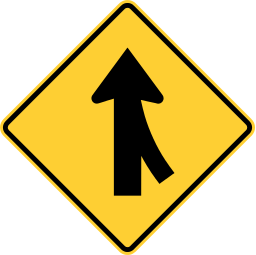

| 题目 |
答案 |
| 在高速公路变更车道时，应提前开启转向灯，观察情况，确认安全后在变道？ |
正确 |
错误 |
| 将转向灯开关向下拉，右转向灯亮？ |
错误 |
正确 |
| 车辆在抵押登记，备案期间不可以办理转移登记？ |
正确 |
错误 |
| 安装防抱制动装置(ABS)的机动车制动时，制动距离会大大缩短，因此不必保持安全车距？ |
错误 |
正确 |
| 在实线的时候可以转换车道？ |
错误 |
正确 |
| 当你看到黄灯闪烁时，你要怎么办？ |
减速慢行 |
停车确认安全后前行 |
正常前行 |
加速行驶 |
| 当你在行车时听到紧急信号的车，你要怎么做？ |
确认安全后尽快靠最右车道停下 |
确认安全后尽快靠最左车道停下 |
加速前行 |
正常行使 |
| 除非有标志指明，不然在市区，住宅区的最高驾驶速度是多少？ |
30英里 |
20英里 |
25英里 |
35英里 |
| 当红灯亮时，你要怎么做？ |
停车，知道信号灯为绿灯，同时确认安全才前进 |
减速，确认安全后前进 |
加速行驶 |
停车，确认安全后就可以前进 |
| 当驶入高速公路的时候， 你要怎么做？ |
加速达到高速公路的速度，然后驶入高速公路 |
停车，确认安全后进入高速 |
减速，然后驶入高速 |
直接驶入高速 |
| 在双向路上，你如果想左转，你应该在什么位置？ |
靠近中线的车道 |
靠近右线的车道 |
随意在哪条车道都可以 |
只要不在最右车道就行 |
| 在单程路上你想转左之前，你应在路的什么位置？ |
靠近路的左手边 |
靠近路的中间 |
靠近路的右边 |
在路的哪个位置都行 |
| 在十字路口闪着红灯，表示什么？ |
停车，直至安全才前进 |
减速慢行 |
加速前行 |
正常行驶 |
| 在什么情况下，红灯可以左转？ |
在有交警指挥的时候 |
任何时候都不可以 |
确认安全后即可 |
在没有NO TURN ON RED的标志时 |
| 在什么情况下，红灯可以右转？ |
在有交警指挥或者没有NO TURN ON RED 标志时可以右转 |
任何时候都可以 |
任何时候都不可以 |
确认安全后就可以 |
| 当到达十字路口，绿灯刚转黄灯，你应怎样做？ |
停车，如果停车是危险的，前进要加倍小心 |
加速开过去 |
减速开过去 |
停车，确认安全后马上开过去 |
| 某人的驾驶执照被吊销后他 |
在任何情况下都不准驾驶 |
可以申请临时驾照 |
可以继续驾驶 |
在有他人陪伴下可以继续行驶 |
| 当两架车在大约同一时间驶到没有标志的十字路口，哪一架车有优先权？ |
从右方驶来的车辆 |
都有优先权 |
都没有优先权 |
从正面驶来的车辆 |
| 在什么时候需要把车头灯开着？ |
日落前半小时和日出后半小时 |
日落前15分钟和日出后15分钟 |
日落前45分钟和日出后45分钟 |
日落前1小时和日出后1小时 |
| 酒精在人体血液中占什么份量，使你成为危险驾驶者及有罪? |
0.08% |
0.07% |
0.09% |
0.10% |
| 在十字路口，亮红灯并有绿色箭头表示什么？ |
小心向着箭头的方向转，让路于有优先权的车辆及行人 |
可以往箭头方向行驶 |
不可往箭头方向行驶 |
小心向着箭头的方向转，不必让路于其他车辆及行人 |
| 如果交通灯转了，而行人仍然在过马路，谁有优先权？ |
行人 |
车 |
都没有 |
谁先到路口谁有 |
| 如果你置身于交通意外，而当时有人受伤，你要怎么做？ |
立即报告意外于最近的州警察或当地警察 |
立即联系家人朋友前来 |
立即联系保险公司 |
立即联系急救车 |
| 如果你被控醉酒行车，第一次会被罚停牌多久？ |
6个月 |
9个月 |
12个月 |
3个月 |
 |
单行道 |
双行道 |
左转 |
右转 |
 |
向左急转弯 |
向右急转弯 |
向左绕行 |
连续弯道 |
|
环岛 |
右侧通行 |
左侧通行 |
右转 |
 |
禁止按喇叭 |
断续按喇叭 |
减速按喇叭 |
禁止长时间按喇叭 |
|
双向路 |
单向路 |
减速 |
分离车道 |
 |
停车 |
合并车道 |
校区人行道 |
靠右行车 |
 |
禁止驶入 |
铁路 |
靠右行驶 |
合并车道 |
 |
校区 |
减速 |
让路 |
住宅区 |
|  |
前方道路合并 |
停车 |
前面有坡路 |
左转 |
|
铁路 |
合并车道 |
靠右行车 |
单行路 |
|
前方路滑 |
前方路窄 |
合并车道 |
校区 |
 |
让路 |
停车 |
禁止驶入 |
禁止右转 |
|
禁止右转 |
可以右转 |
只能右转 |
左转 |
 |
禁止调头 |
前方可调头 |
禁止左转 |
禁止右转 |
 |
靠右行驶 |
靠左行驶 |
不能靠左 |
不能靠右 |
|
前方道路施工 |
禁止驶入 |
前方道路关闭 |
前方绕行 |
|
前方道路关闭 |
前方道路施工 |
前方绕行 |
禁止驶入 |
 |
车辆改道绕行 |
前方道路施工 |
前方道路关闭 |
禁止驶入 |
 |
医院 |
高速 |
信息中心 |
加油站 |
 |
信息中心 |
医院 |
高速 |
加油站 |
 |
禁止左转 |
禁止右转 |
左转 |
右转 |
| 如拒接作酒精测试是如何处罚？ |
立即被取消驾驶执照. |
不会受到处罚 |
罚款300美元 |
罚款并拘押15天 |
| 酒对驾驶人有何影响？ |
酒会使驾驶人反应迟缓和影响判断力，影响听觉、视力、为避免醉酒驾驶，唯一的办法是酒后不要驾驶. |
少量酒不会有影响 |
有影响，但不会影响开车 |
使你更加精神 |
| 1.5oz的威士忌酒、12oz的啤酒或 3至5oz的葡萄酒中各含有多少酒精？ |
0.5oz |
0.8oz |
1oz |
1.2oz |
| 怎样可使你很快清醒？ |
不可能，酒精一旦进入你的血液，是没有一个快的方法使其消除，新陈代谢必须经过 1 小时 15 分钟时间来消解每一安士酒精 |
可以通过运动使你快速清醒 |
可以通过喝水使你快速清醒 |
可以通过喝牛奶使你快速清醒 |
| 什么是BAC？ |
是你血液中酒精的含量 |
是你胃中酒精的含量 |
是你喝的酒的总量 |
是你喝酒量的上限 |
| 初次醉酒驾驶的处罚是什么？ |
罚款$500-$5000,入狱最高2年半,吊销驾驶执照一年 |
罚款$500-$4000,吊销驾照半年 |
罚款$1500,吊销驾照9个月 |
罚款$3000,吊销驾照18个月 |
| 迷幻药是如何影响驾驶人？ |
影响驾驶人的夜间视觉和缓慢驾驶人对危险情况的反应能力 |
影响驾驶人的白天视觉 |
降低驾驶人对危险情况的反应能力 |
有影响，但不会影响开车 |
| 什么是基本速度法？ |
驾驶速度必须安全地顾及到行人，道路情况和其它交通 |
驾驶速度必须安全，不需要顾及行人 |
驾驶速度尽量安全，且需要顾及到行人和其它交通 |
驾驶速度必须低于限速，且需要顾及到行人 |
| 在学校区，什么速度是不合理？ |
时速超过20英里即不合理 |
时速超过25英里即不合理 |
时速超过30英里即不合理 |
时速超过35英里即不合理 |
| 如果在高速公路错过了你的出口，你应该怎样？ |
你应该继续前进直到下一个出口，从不要在高速公路后退 |
你应该减速停到安全车道，然后想办法下出口 |
如果车辆不多，可以试着倒车然后下出口 |
直接倒车强行下出口 |
| 如果你准备超车，必须看清楚前方多远？ |
400英尺或更远 |
300英尺或更远 |
350英尺或更远 |
250英尺或更远 |
| 如果有人在你正在驾驶的街道上行走，你应怎样？ |
慢下来，有必要时停车.行人有优先权 |
在行人到你车前，快速开过去 |
按喇叭提醒他们退回行人道 |
按喇叭提醒他们快速穿过街道 |
| 一辆学校巴士闪亮红灯，你必须怎样？ |
必须停车，直到学校巴士关闭闪红灯 |
可以减速慢行，慢慢通过学校巴士 |
按喇叭，提示学校巴士司机你要通过 |
无需担心，可正常行驶通过 |
| 什么人会使用白色手杖？ |
盲人 |
聋哑人 |
行动不便的人 |
年纪大的人 |
| 火车路轨横过的路牌是什么形状？ |
圆形 |
八边形 |
四边形 |
三角形 |
| 礼让的路牌是什么形状？ |
倒三角形 |
四边形 |
圆形 |
八边形 |
| 停车的路牌是什么形状？ |
八边形 |
圆形 |
三角形 |
四边形 |
| 停车路牌是什么颜色？ |
红色 |
蓝色 |
黄色 |
白色 |
| 当你将车辆卖出，你的注册证还有效吗？ |
已无效，如无新注册证是不可以驾驶该车 |
已无效，但仍可驾驶该车 |
有效，直到该车的新持有者注册为止 |
有效，直到注册证有效期过为止 |
| 驾驶执照的有效期是多少？ |
5年 |
4年 |
6年 |
3年 |
| 驾驶时戴耳机是违法的吗？ |
是，如果被检控会被罚款及吊销执照. |
是，但只会罚款 |
不违法 |
是，但只会收到警察警告 |
| 在什么情形下可将驾照借给他人？ |
永远不可以 |
可以借给正在学车者 |
只可作表明身份用 |
在紧急时 |
| 当你驶近十字路口，正亮着红色交通灯，而警察打手势让你通过，你要怎么做？ |
服从警察的指挥，立即通过 |
等候绿灯 |
让警察知道现在是红灯 |
停下来，确定他要你通过 |
| 当你接近十字路口时，发觉十字路口前面交通很拥挤，你要怎么做？ |
停在十字路口之前，等待前面交通畅通后在前进 |
贴着前面的车辆行驶 |
慢慢驶入十字路口，直到前面交通畅通后在前进 |
按喇叭提醒前面车辆前进 |
| 什么时候可以换线？ |
打信号灯，确认安全后才能转线 |
减速打信号灯后即可 |
按喇叭提示其它车辆你要换线 |
看后视镜然后换线 |
| 大多数汽车打滑的原因是什么？ |
车速太快 |
车胎胎压不足 |
车胎胎压太大 |
路上有积雪或冰 |
| 在湿滑或结冰的路上快速停车的最后方法是什么？ |
用一踩一放的方法踩刹车，直到车辆完全停下来 |
不要踩刹车，让车自动减速停下 |
大力踩刹车，预防车辆滑行 |
像平常一样踩刹车 |
| 在大雾中行驶，要开哪种灯？ |
低灯 |
泊车灯 |
高灯 |
高灯及泊车灯 |
| 在你把车停在向下的斜坡时，你要怎么停？ |
扭前胎向右，并拉紧手刹 |
扭前胎向左，并拉紧手刹 |
拉紧手刹 |
把轮胎打直 |
| 当你知道后方一辆车准备超车时，你要怎么做？ |
确认安全后，驶向右边，让他超车 |
加速让他不能超车 |
打紧急灯，提示他不要超车 |
减速，阻止他超车 |
| 当你时速达到30英里的时候，你要和前车至少保持多远才安全？ |
3个车位的距离 |
2个车位的距离 |
4个车位的距离 |
5个车位的距离 |
| 当你把车驶出停车位前，你要怎么做？ |
打灯，确认安全后才驶出 |
打灯后即可驶出 |
按喇叭提示周围车辆，然后驶出 |
无需打灯，确认安全即可驶出 |
| 在夜间以最高限速行驶比日间更危险，为什么？ |
在夜间，视野比白天差 |
在夜间，路面更湿滑 |
在夜间，人的反应会变慢 |
在夜间，有些人会开远光灯 |
| 哪种手势表示减速？ |
手臂向下 |
手臂向左 |
手臂向上 |
转圆圈的动作 |
| 哪种手势表示左转？ |
手臂向左 |
手臂向下 |
手臂向上 |
转圆圈的动作 |
| 哪种手势表示右转？ |
手臂向上 |
手臂向左 |
手臂向下 |
转圆圈的动作 |
| 当前车停下来让行人过斑马线时，你应该怎么做？ |
停车，让行人过斑马线 |
按喇叭，提示前车前进 |
从左面超车 |
从右面超车 |
| 马路中间的断线表示什么？ |
在安全时，可以超车和换线 |
不能超车 |
随时可以超车 |
在日间可以超车 |
| 当你用平行泊车的方式将在停在两辆车之间后，还需要做什么？ |
将前车轮摆正，同时和前后两车保持足够的距离 |
尽可能离前面的车近一些 |
尽可能离后面的车近一些 |
让前车轮扭向路牙那一边 |
| 都知道开车不能超速，但为什么还要设置"最低速度限制"呢? |
用以保障车流的顺畅通行 |
仅仅是一种建议，无需遵守 |
用于方便初学者练车 |
为了保障行人的安全 |
| 离开高速公路而进入普通公路时，你应该怎么做？ |
留意速度表，将车速调整到普通公路上所要求的数值 |
打转向灯以提醒普通公路上的其他车辆 |
迅速找一个加油站停车，然后检测剩余油量和轮胎 |
注意和其他车辆保持车距 |
| 在消防栓旁边停车时，需要距离它多远？ |
15英尺 |
9英尺 |
12英尺 |
6英尺 |
| 车子在结冰的路面上打滑时该怎么办? |
不要踩刹车以避免车身突然甩动，同时尽力控制方向盘以保持稳定 |
轻踩刹车来减速 |
握紧方向盘并立刻刹车 |
不要踩刹车，同时立刻转弯离开路面 |
| 马路中间的实线表示什么？ |
不能超车和换线 |
可以超车和换线 |
没有车辆时可以超车 |
没有车辆时可以换线 |
| 夜晚开车时，对面车辆的灯光晃得你睁不开眼睛，应该如何消减这种影响？ |
将目光稍稍转向路面的右侧，以缓解光线的刺激 |
低头看方向盘 |
戴上墨镜 |
讲远光灯打开，和对面的车辆对着照射 |
| 法律规定，汽车的检查周期是多久？ |
1年1次 |
半年1次 |
9个月1次 |
1年半1次 |
| 喝掉一杯12盎司的啤酒后，血液内的酒精含量大约为0.02%，人体为了排除这些酒精需要多长时间？ |
1小时 |
1天 |
3小时 |
5小时 |
| 人体内负责降解酒精的器官是? |
肝脏 |
肾脏 |
脑部 |
胰脏 |
| 警察手中的"呼吸分析器"是用来干什么的?
|
测量人体内的酒精含量 |
帮助醉酒者清醒 |
测试司机是否吸食了大麻 |
测试司机是否疲劳驾驶 |
| 据统计，所有的交通意外死亡案例中有(____)是因酒后驾驶引发的? |
50% |
30% |
70% |
90% |
| 下列哪种方法可以减缓人体对于酒精的吸收速度，以至于不会醉的那么快? |
喝酒之前先吃东西 |
吃东西之前先喝酒 |
只喝啤酒 |
只喝红酒 |
| 交通法中根据什么来判定司机的驾驶能力受损或属于酒后驾驶? |
当事人血液中的酒精含量 |
当事人对于酒精的忍耐力 |
当事人的视力和反应速度 |
当事人是否能直线行走 |
| 你和朋友聚会中饮酒了，回家时如何保证安全驾驶？ |
请没有喝酒的朋友开车带你回家 |
开车回家前先冲个冷水澡 |
开车回家前先喝杯咖啡 |
在回家前半小时内不要再喝酒了 |
| 如果你正在服药期间，应该如何安全驾驶？ |
在开车前阅读药物说明书，确保不会影响驾驶能力 |
服药期间的你只能在白天驾驶 |
开车前喝少量的酒可以低消药物的副作用 |
驾驶过程中定时停车休息 |
| 哪一种情况不会在你饮酒之后出现？ |
你会更加镇静和集中注意力 |
你对速度和距离的判断力会下降 |
你的反应会变得迟钝 |
你的视力可能会下降 |
| 一辆在路上行驶的车如无注册证、无车牌、无必须的安全设备，谁应该负责？ |
车主、驾驶人、负责人三人负责 |
车主 |
驾驶人 |
车主和车厂 |
| 什么年龄才可以取得学车证？ |
16岁或以上 |
18岁或以上 |
21岁 |
无年龄限制 |
| 如果警察，考牌官或调查人员要你签名，你必须如何做？ |
依法照做 |
无需依从 |
若无法院授权，无需照做 |
视情况而定要不要依从 |
| 学车时谁负责？ |
学车者和教车者共同负责 |
学车者 |
教练 |
学车者监护人 |
| -----------------------------摩托车复习题------------------------- |
|
|
|
|
| 在哪种情况下，您不应该增加跟随距离？ |
当你成群结队骑行时 |
在湿滑的道路上 |
交通繁忙时 |
当你被追赶时 |
| 哪里最可能发生车祸？ |
十字路口 |
学校附近 |
多车道的高速公路 |
居住区 |
| 应该始终避免哪个车道位置？ |
没有一个车道的位置永远是最好的 |
左边，由于迎面而来的交通 |
中间，因为地上有油和其他流体的积累 |
右边，因为在道路边缘附近牵引力差 |
| 每次骑行前，您应该先进行什么调整？ |
两边的后视镜 |
您的脚钉 |
离合器 |
油门 |
| 如果在骑车过程中遇到任何一个轮胎漏气的情况，您应该怎么办？ |
牢牢握住手柄 |
提高车速 |
改变方向 |
急刹车 |
| 中线位置最适合什么？ |
被前方的驾驶员看到 |
准备超前方的车辆 |
改变车道 |
避免旁边停放的汽车带来的危险 |
| 如何帮助稳定摩托车通过转弯？ |
加油门 |
减油门 |
踩后轮刹车 |
按住离合器 |
| 为了安全骑行，您应该保持距离至少 |
两秒 |
三秒 |
一秒 |
四秒 |
| 要穿越铁轨，通常应在车道内______骑行？ |
直线 |
以10度角 |
通过倾斜 |
以20度角 |
| 摩托车撞车的一个常见因素是？ |
不被其他车辆看到 |
交通信号灯 |
不好的司机 |
季节性变化 |
| 为了在光滑的路面上安全骑行，您应该？ |
避免突然移动 |
保持或增加速度 |
往后靠 |
抓住离合器 |
| 您不该将摩托车与汽车并排行驶，因为 |
您可能处于盲区 |
汽车驾驶员的能见度可能会降低 |
汽车驾驶员可能无法转弯 |
您的摩托车可能会打滑 |
| 骑摩托车时保持警觉的最佳方法是？ |
多停下来休息 |
多喝水 |
避免戴面罩 |
只在白天骑行 |
| 什么时候应该同时使用前刹车和后刹车？ |
每一次，除非轮胎没气了 |
仅在紧急情况下 |
永远不要同时 |
在山坡和弯道上 |
| 摩托车在夜间行驶应该注意什么? |
前后装反光片 |
前后装红色灯 |
开车头灯 |
不必要开灯 |
| 高速公路和普通公路的主要区别是什么？ |
在高速公路上，车辆的速度更快 |
在高速公路上，摩托车只能在最右边的车道上行驶。 |
在高速公路上，货车被禁止通行. |
普通公路上的车流更多 |
| When riding across a small, slippery surface, you should |
pull in the clutch |
use the highest gear possible |
avoid using the rear brake |
use your low-beam headlight |
| When you are being passed from behind, |
stay in the center portion of your lane |
accelerate |
move to the left portion of your lane |
move into the portion of the lane farthest from the passing vehicle |
| While riding in the city, you should be looking ahead _________ for hazards. |
one-half block |
one block |
two blocks |
three blocks |
| When riding at night, you should |
increase your following distance |
increase your speed |
decrease your following distance |
use your low beam |
| When you are seated properly on your motorcycle, your arms should be |
slightly bent at the elbows |
positioned with your hands above your elbows |
locked at the elbows |
bent at a 90-degree angle |
| When being passed by another vehicle, you should ride in the _______ lane position. |
center |
left |
right |
left or center |
| Which portion of the lane should you be in before starting to pass? |
the left portion of the lane at a safe following distance |
the right portion of the lane at a safe following distance |
the left portion of the lane, as close as possible to the vehicle you are going to pass |
the center portion of the lane at a safe following distance |
| After as few as ____ alcoholic drink(s), your ability to ride can be affected. |
1 |
2 |
3 |
4 |
| If your front tire fails while you are riding, you should |
shift your weight to the rear to help maintain stability |
use engine braking to slow down |
shift your weight to the front to help maintain stability |
avoid using the rear brake |
| When riding long distances, how often should you stop and stretch? |
every two hours |
every five hours |
every 50 miles |
once per trip |
| Before pulling off the road, it is important to check |
if the surface is safe to ride on |
if it is a designated pull-off area |
the traffic in front of you |
if your lights are working |
| When should a passenger mount the motorcycle? |
after the engine has started |
before the engine is started |
before the rider |
while it is still on the kickstand |
| The front brake is controlled by |
the right hand lever |
the left hand lever |
the left foot pedal |
the right foot pedal |
| Riding between lanes of traffic is |
prohibited at all times |
prohibited at night |
permitted only when traffic is at a standstill |
allowed in designated areas |
| In Massachusetts, a helmet is required to be worn |
at all times |
by the rider only |
only on freeways |
by those under the age of 18 |
| When turning your motorcycle, what should you avoid? |
decelerating |
accelerating |
leaning with the motorcycle |
turning your whole head to see where you are going |
| You cannot ride a motorcycle on a highway |
unless you can travel safely at the minimum posted speeds |
faster than 45 mph |
at night, because your lights aren't bright enough |
during rush hour |
| Most motorcycles use convex mirrors. How are these different from regular mirrors? |
objects in convex mirrors appear farther away than they really are |
convex mirrors will reflect light into your eyes when it's sunny |
objects in convex mirrors appear closer than they really are |
convex mirrors do not give a good view of what is behind you |
| When traveling in heavy congested traffic, what is an adequate space cushion between you and the vehicle ahead? |
2 seconds |
1 second |
3 seconds |
4 seconds |
| When riding in a group, motorcyclists should ride |
in a staggered formation |
in pairs |
in an alternate formation |
in single file |
| Which of the following is true about starting your motorcycle on an upgrade? |
use the rear brake to hold you until the engine takes hold |
never try to start a motorcycle on an upgrade |
position yourself at a 90-degree angle against the curb |
start in second gear |
| As you are riding, an object appears suddenly in your path. What should you do? |
swerve onto the shoulder of the road |
brake abruptly while swerving |
swerve into the left lane |
nothing |
| Riding __________ decreases your chances of being seen. |
alongside other vehicles |
near other motorcycles |
while using your high beam |
in residential areas |
| If you are being followed by a tailgater and he or she is unable to pass you, you should |
increase the space cushion in front of you |
flash your brake light |
take the next exit from the road |
pull over and stop |
| Which of the following is the most likely place for a collision? |
an intersection |
a school zone |
a freeway |
a rural road |
| While riding your motorcycle, you approach a crosswalk that a pedestrian has just entered. What should you do? |
stop and wait for the pedestrian to cross the road |
proceed if the pedestrian is not in your lane |
proceed as long as you will not hit the pedestrian |
stop inside the crosswalk |
| When riding through an intersection, you must be especially aware of |
vehicles turning left into your path |
the position of stop lines |
unexpected light changes |
pedestrians crossing the road |
| In which of these situations is it LEAST important to check your mirrors? |
when you are descending a large hill |
when you are stopped at an intersection |
before you change lanes |
when you are starting to slow down |
| If your motorcycle starts to wobble, you should |
close the throttle slowly |
open the throttle slowly |
apply the rear brake only |
apply the front brake only |
| As you approach the center of a curve, you should |
move toward the inside of the curve |
apply the rear brake |
move toward the outside of the curve |
decrease the throttle |
| When preparing to enter the roadway from the roadside, how should you position your motorcycle? |
at an angle |
with the rear tire off the road |
parallel to the roadside |
perpendicular to the roadside |
| If an object suddenly appears in your riding path, you should ________ to avoid a crash. |
swerve around the object |
lean your motorcycle |
swerve and apply the brakes |
apply the front brake gently |
| You should maintain a minimum safe following distance of _________ behind the vehicle ahead. |
2 seconds |
1 second |
3 seconds |
4 seconds |
| When riding beside parked cars to your right, why should you maintain a left lane position? |
you may avoid problems from car doors opening |
you are more likely to hit a car in the right lane position |
the center lane position is too slippery |
motorcyclists should always ride in the left lane position |
| An applicant must be ____ years old in order to obtain a learner's permit. |
16 |
15 |
17 |
18 |
| The United States is now using traffic signs that feature _____ instead of just words. |
Both pictures and symbols. |
picture |
symbols |
numbers |
| Always make sure you are __________ when downshifting. |
Driving slow enough. |
Using your turn signals |
Driving up a steep hill. |
Exceeding the speed limit. |
| If you fail to turn off your turn signal it ______. |
Can cause someone to think you are turning and create an accident |
Is not really a big deal |
Just makes a lot of noise but it's ok. |
Will cause you to get arrested. |
| Unless signs are posted, it is unlawful to drive faster than ____ mph in a school zone. |
20 |
10 |
40 |
60 |
| Motorized scooters are not allowed to go faster than ____ mph. |
20 |
15 |
25 |
30 |
| Road work signs are usually _____ in color. |
orange |
red |
yellow |
purple |
| The first offense for operating under the influence gives you a _____ year(s) license suspension. |
1 |
2 |
3 |
4 |
| You may not drive closer than ______ feet of a trolley passenger step |
8 |
4 |
5 |
6 |
| How can you limit risk when merging vehicles are approaching? |
Give the merging vehicles appropriate room to enter; do not assume they will see you |
Maintain your current speed. |
Flash your lights to show the vehicle you are there. |
Speed up to get ahead of them. |
| A solid white lane line means: |
You may only cross this if you are avoiding a hazard. |
You can cross this line if you wish you pass. |
None of the listed answers. |
You should not cross this ever. |
|
|
|
|
|
|
|
|
|
|
|
|
|
|
|